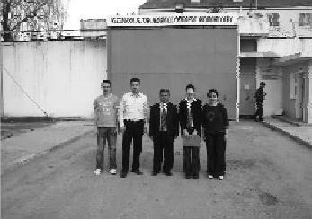

Hayatıma ve çevreme renk katmama olanak tanıyan, kişisel gelişim bilincini aşılayan, sosyal sorumluluk hissini en derinden yaşatan bu proje, kariyerimi planlarken de benimleydi. TUP, küçük bir çocuğun okuma yazma sürecinde yaşadığı heyecanın, her yaşta yaşanabileceğini gösteren bir projedir. (Fulya Temiz)
Kütahya Cezaevi'ne Fulya, Taylan, Neslihan, Özgür ve ben birlikte gittik. Bir mahkûm çıkışta bir şiir verdi. "Anama yazmıştım Şerif Hocam. Sen hak ettin. Şiir senin. Ben anama bir tane daha yazarım" dedi. Şiiri okudum, gözlerim doldu. İnsanlık dolu bir şiir. Genç ve efendi bir çocuktu. "Niye buradasın?" diye sordum. "Hocam ben adam öldürdüm" diye yanıtladı. "Senin gibi efendi biri nasıl adam öldürür?" diye sorduğumda da "Hocam kimse bize bunları anlatmadı ki" diye yanıt verdi. Ders hepimize.